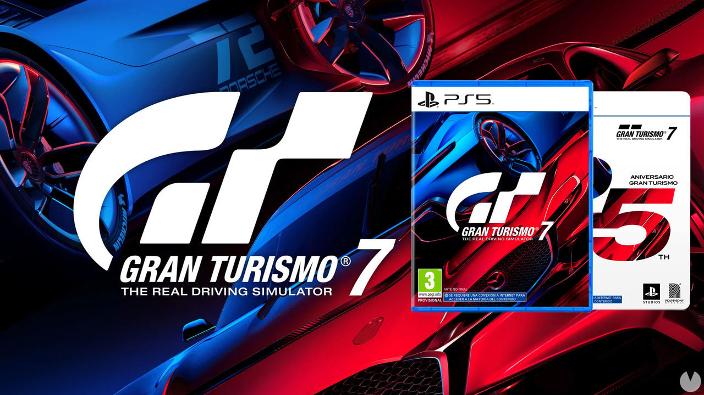
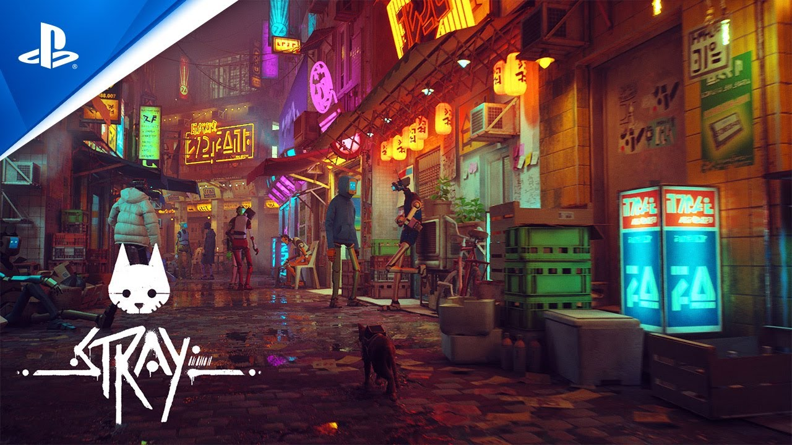

Experimenta una velocidad sorprendente con una SSD de velocidad ultrarrápida, una inmersión más profunda con soporte para respuesta háptica1,
gatillos adaptables1 y audio 3D*, además de una generación completamente nueva de juegos de PlayStation.
Marvel's Spider-Man: Miles Morales
Marvel's Spider-Man: Miles Morales es un videojuego de acción y aventuras desarrollado por Insomniac Games y publicado por Sony Interactive
Entertainment para PlayStation 4 y PlayStation 5. Está basado en el superhéroe de Marvel Comics Miles Morales.

Gran Turismo 7
Gran Turismo 7 es un videojuego de simulación de carreras de 2022 desarrollado
por Polyphony Digital y publicado por Sony Interactive Entertainment. El juego es la octava entrega principal de la serie Gran Turismo.

Stray
Stray es un juego de aventuras desarrollado por BlueTwelve Studio y publicado por Annapurna Interactive.
Anteriormente conocido como HK_Project, el juego fue lanzado el 19 de julio de 2022 para Microsoft Windows,
PlayStation 4 y PlayStation 5.